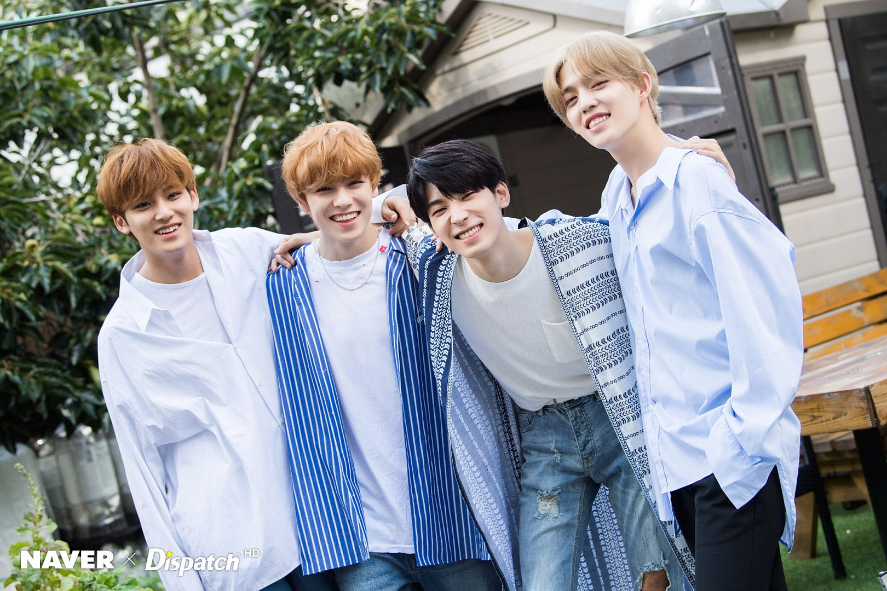
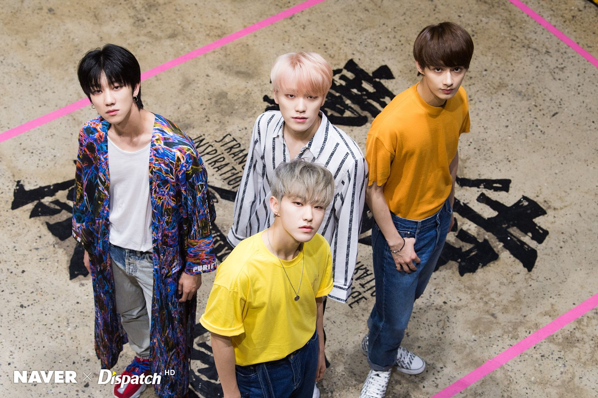

SEVENTEEN
Pledis Entertainment

Seventeen
Seventeen (Hangul: 세븐틴; ditulis sebagai SEVENTEEN atau SVT) adalah grup penyanyi pria asal Korea Selatan yang dibentuk oleh Pledis Entertainment. Ketigabelas anggota dibagi menjadi tiga unit yang berbeda untuk menampilkan spesialisasi keahlian masing-masing: unit hip-hop, unit vokal dan unit performance. Kelompok ini dikenal akan keterlibatan para anggotanya dalam penyusunan dan pembuatan semua lagu, serta pengembangan koreografi mereka.Klub penggemar untuk grup ini dipanggil dengan sebutan "Carat".
Hip-Hop Unit
S.Coups lahir sebagai Choi Seungcheol (Hangul: 최승철) pada 8 Agustus 1995 (umur 24) di Daegu,Korea Selatan. Ia adalah leader utama grup sekaligus leader untuk unit Hip-Hop. Ia awalnya ditujukan untuk debut bersama NU'EST.
Wonwoo lahir sebagai Jeon Wonwoo (Hangul: 전원우) pada 17 Juli 1996 (umur 23) di Changwon, Gyeongsangnam-do, Korea Selatan.
Mingyu lahir sebagai Kim Mingyu (Hangul: 김민규) pada 6 April 1997 (umur 22) di Anyang, Korea Selatan.
Vernon lahir sebagai Chwe Hansol Vernon dengan nama korea Choi Hansol (Hangul: 최한솔) pada 18 Februari 1998 (umur 22) di New York, Amerika Serikat.
Vocal Unit
Woozi lahir sebagai Lee Jihoon (Hangul: 이지훈) pada 22 November 1996 (umur 23) di Busan, Korea Selatan. Ia adalah leader untuk unit vokal.
Jeonghan lahir sebagai Yoon Jeonghan (Hangul: 윤정한) pada 4 Oktober 1995 (umur 24) di Hwaseong, Korea Selatan.
Joshua lahir sebagai Joshua Hong[7] (Hangul: 조슈아 홍) dengan nama korea Hong Jisoo (Hangul: 홍지수) pada 30 Desember 1995 (umur 24). Ia berasal dari Los Angeles, California, Amerika Serikat.
DK atau dikenal juga sebagai Dokyeom dengan nama asli Lee Seokmin (Hangul: 이석민) pada 18 Februari 1997 (umur 23) di Yongin, Gyeonggi, Korea Selatan.
Seungkwan lahir sebagai Boo Seungkwan (Hangul: 부승관) pada 16 Januari 1998 (umur 22) di Busan, Korea Selatan.
Performance Unit
Hoshi lahir sebagai Kwon Soonyoung (Hangul: 권순영) pada 15 Juni 1996 (umur 23) di Namyangju, Gyeonggi, Korea Selatan. Ia adalah leader untuk Performance Unit.
Jun lahir sebagai Wen Junhui (Hanzi: 文俊辉) pada 10 Juni 1996 (umur 23) di Shenzhen, Guangdong, Tiongkok. Ia adalah seorang aktor di Tiongkok dan tampil di beberapa acara TV dan film.
The8 lahir sebagai Xu Minghao (Hanzi: 徐明浩) pada 7 November 1997 (umur 22) di Anshan, Liaoning, Tiongkok.
Dino lahir sebagai Lee Chan (Hangul: 이찬) pada 11 Februari 1999 (umur 21) di Iksan, Jeollabuk-do, Korea Selatan.
Pledis Entertainment
Hakdong-ro 67-gil, Cheongdam-dong, Gangnam-gu,Seoul, South Korea